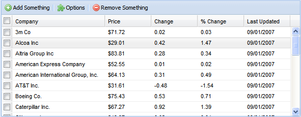

Custom Render property
Uses a custom user control for rendering grids. Applies to all selection and grid tab objects. Scope Objects: Web Panel Description
Displaying structured information in web applications has become an important requirement in today's applications. The more intuitive the data, the better users can understand it. In addition, extra functionalities like filtering, sorting, and paging greatly enhance the user's experience which is a key factor for the success of our applications. Let's see some examples of well-designed data structures we are getting used to seeing in web applications.  TableSorter: TableSorter is a jQuery plugin for turning a standard HTML table with THEAD and TBODY tags into a sortable table without page refreshes. TableSorter can successfully parse and sort many types of data including linked data in a cell.
Flexigrid: Lightweight but rich data grid with resizable columns and a scrolling data to match the headers, plus an ability to connect to an XML-based data source using Ajax to load the content. Similar concept to that of the Ext Grid but based on jQuery, which makes it lightweight and follows the jQuery mantra of running with the least amount of configuration. As of GeneXus X Evolution 1, the grid control has a new property named Custom Render that lets you select a user control that was implemented for that purpose. How to use itIt is very simple; just select your grid and change Custom Render property to an available control from the list. For example, suppose you have implemented the following custom renders:
If you select the gxui.GridExtension that is part of gxui Library, the next time you execute your web panel you will see that the grid looks as follows: The standard grid has been replaced by this control and all information was also loaded in it. FAQ
Run-time/Design-timeThis property applies only at design-time. |